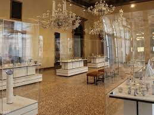

DESCRIPTION OF THE CITY
Venice is a city found in Italy, in the Veneto region. Venice city is a island. The area city is
414.57 km2 and an elevation of 1m. The total population the city is about 258,685 and it has a density of
620/km2. Venice is built on the lagoons of the Adriatic Sea,it does not have roads, just canals.
The city is led by Luigi Brugnaro, the mayor.
HISTORY OF THE CITY
History of Unmissable Bridges
Ponte dei Pugni
Ponte dei Pugni, also known as the Bridge of Fists, is another of Venice’s well-known bridge
At the beginning of the 17th century and during the final four months of the year,
Bridge of Sighs
Built at the beginning of the 17th century, the Bridge of Sighs
gained its name from those who crossed it. Those who crossed the Bridge of Sighs were seen as
guilty of something, and it seemed likely that they’d be put in prison for a long time because of this
Ponte degli Scalzi

Another name for Ponte dei Scalzi is the Bridge of the Barefoot
it was completed in 1934.
Ponte della Paglia
Also known as the Straw Bridge, Ponte della Paglia links the Castello District
San Marco. It was originally built in 1360 and was reconstructed during the 19th century
Government
7th century
Paolo Lucio Anafesto (697–717)
8th century
Marcello Tegalliano (717–726)
Orso Ipato (726–737)
Brief Interregnum (737–742)
Dominicus Leo Abrogatis (737)
Felice Cornicola (738)
Teodato Ipato (739)
Gioviano Cepanico Ipato (740)
Giovanni Fabriciaco (741)
Teodato Ipato (742–755)
Galla Gaulo (755–756)
Domenico Monegario (756–764)
Maurizio Galbaio (764–787)
Giovanni Galbaio (787–804)
9th century
Obelerio Antenoreo (804–811)
Agnello Participazio (811–827)
Giustiniano Participazio (827–829)
Giovanni I Participazio (829–837)
Pietro Tradonico (837–864)
Orso I Participazio (864–881)
Giovanni II Participazio (881–887)
Pietro I Candiano (887–888)
Pietro Tribuno (888–912)
10th century
.jpg)
Orso II Participazio (912–932)
Pietro II Candiano (932–939)
Pietro Participazio (939–942)
Pietro III Candiano (942–959)
Pietro IV Candiano (959–976)
Pietro I Orseolo (976–978)
Vitale Candiano (978–979)
Tribuno Memmo (979–991)
Pietro II Orseolo (991–1009)
11th century
Otto Orseolo (1009–1026)
Pietro Barbolano (1026–1032)
Domenico Flabanico (1032–1043)
Domenico Contarini (1043–1071)
Domenico Selvo (1071–1084)
Vitale Faliero (1084–1096)
Vitale I Michiel (1096–1102)
12th century
Ordelafo Faliero (1102–1117)
Domenico Michele (1117–1130)
Pietro Polani (1130–1148)
Domenico Morosini (1148–1156)
Vital II Michele (1156–1172)
Sebastiano Ziani (1172–1178)
Orio Mastropiero (1178–1192)
Enrico Dandolo (1192–1205)
13th century
Pietro Ziani (1205–1229)
Jacopo Tiepolo (1229–1249)
Marino Morosini (1249–1252)
Reniero Zeno (1252–1268)
Lorenzo Tiepolo (1268–1275)
Jacopo Contarini (1275–1280)
Giovanni Dandolo (1280–1289)
Pietro Gradenigo (1289–1311)
14th century
Marino Zorzi (1311–1312)
Giovanni Soranzo (1312–1328)
Francesco Dandolo (1328–1339)
Bartolomeo Gradenigo (1339–1342)
Andrea Dandolo (1342–1354)
Marino Faliero (1354–1355)
Giovanni Gradenigo (1355–1356)
Giovanni Dolfin (1356–1361)
Lorenzo Celsi (1361–1365)
Marco Cornaro (1365–1367)
Andrea Contarini (1367–1382)
Michele Morosini (1382–1382)
Antonio Venier (1382–1400)
Michele Steno (1400–1413)
15th century

Michele Steno (1400-1413)
Tommaso Mocenigo (1413–1423)
Francesco Foscari (1423–1457)
Pasquale Malipiero (1457–1462)
Cristoforo Moro (1462–1471)
Nicolò Tron (1471–1473)
Nicolò Marcello (1473–1474)
Pietro Mocenigo (1474–1476)
Andrea Vendramin (1476–1478)
Giovanni Mocenigo (1478–1485)
Marco Barbarigo (1485–1486)
Agostino Barbarigo (1486–1501)
16th century
.jpg)
Leonardo Loredan (1501–1521)
Antonio Grimani (1521–1523)
Andrea Gritti (1523–1538)
Pietro Lando (1538–1545)
Francesco Donato (1545–1553)
Marcantonio Trevisan (1553–1554)
Francesco Venier (1554–1556)
Lorenzo Priuli (1556–1559)
Girolamo Priuli (1559–1567)
Pietro Loredan (1567–1570)
Alvise I Mocenigo (1570–1577)
Sebastiano Venier (1577–1578)
Nicolò da Ponte (1578–1585)
Pasqual Cicogna (1585–1595)
Marino Grimani (1595–1606)
17th century
Leonardo Donato (1606–1612)
Marcantonio Memmo (1612–1615)
Giovanni Bembo (1615–1618)
Nicolò Donato (1618–1618)
Antonio Priuli (1618–1623)
Francesco Contarini (1623–1624)
Giovanni I Cornaro (1624–1630)
Nicolò Contarini (1630–1631)
Francesco Erizzo (1631–1646)
Francesco Molin (1646–1655)
Carlo Contarini (1655–1656)
Francesco Cornaro (1656–1656)
Bertuccio Valiero (1656–1658)
Giovanni Pesaro (1658–1659)
Domenico II Contarini (1659–1674)
Nicolò Sagredo (1674–1676)
Alvise Contarini (1676–1683)
Marcantonio Giustinian (1683–1688)
Francesco Morosini (1688–1694)
Silvestro Valiero (1694–1700)
Alvise II Mocenigo (1700–1709)
18th century
Giovanni II Cornaro (1709–1722)
Sebastiano Mocenigo (1722–1732)
Carlo Ruzzini (1732–1735)
Alvise Pisani (1735–1741)
Pietro Grimani (1741–1752)
Francesco Loredan (1752–1762)
Marco Foscarini (1762–1763)
Alvise Giovanni Mocenigo (1763–1779)
Paolo Renier (1779–1789)
Ludovico Manin (1789–1797)
From 1806 to 1866, a Podestà of Venice was appointed by the rulers of the city: Napoleon and the Habsburgs.
From 1946 to 1993, the Mayor of Venice was chosen by the City Council.
Since 1993, under provisions of new local administration law, the Mayor of
Venice has been chosen by popular election, originally every four and, later, every five years.
CITY FACTS
The First Lady To Gradute

Elena Lucrezia Cornaro Piscopia was the first woman in the world to graduate. She was born in
Venice in 1646. She obtained a degree in philosophy from the University of Padua in June the 25
th of 1678.
First Casino

Casino di Venezia, was the first public casino to open in the world and it was opened in Venice.
The casino was opened in 1638. Intially it was a theatre called the Theatre Saint Moses.
Bridges

Venice is well known for its bridges. It has 417 bridges, 72 of them are private. Venice has over
170 canals. The biggest canal is the Grand Canal of Venice is S-shaped and it divided the city in two parts.
Venice is also made up of 118 mini islands which are connected by bridges to make Venice
Cycling And Staking Is Forbiden

The use of bikes, roller skates and skateboards is forbiden. The are no roads in Venice, just canals
therefore because of the narrow routers bikes, roller skate and stakeboards is not
allowed to prevent accident.
Colourful Houses
There are no streets in Venice which makes it very difficult to find addresses, even the postmen
have a diffcult time to find addresses. People in Venice use monuments, shops and landmarks closeby
to their houses to identify their houses.
CITY ATTRACTION SITES
Bridges
.jpg)
Venice is a city of bridges. There are around 300 breath-taking bridges in Venice. It is a magnificant
sight to see indeed.
Churches

There is definatly room for religious people in Venice as there are around 139 church buildings in Venice.
Church going people can easily take a vacation, enjoy the remarkable experiance of being in Venice and
still serve God while at it.
Beach
Because it is an island Venice definatly has an island. This is an amazing opporunity for you to
bring your angels along for a family vacation.
Parks
Venice has a lot of parks ranging from animal parks to swing parks to help you relax and avoid crowds for a little time. Park visiting is also
an amazing way to your little ones busy and smiling.
Museums

History lovers are also highly respected and appreciated in Venice. There are so many Museums they can visit and their little angels can always tag along.
Palaces
.jpg)
Venice is the land of palaces. There are about 200 palaces, giving royalty lovers a wide range of options to choose from.
Restaurants
Venice has a lot of restaurants that serve a variety of food. The best dishes of different types are served.